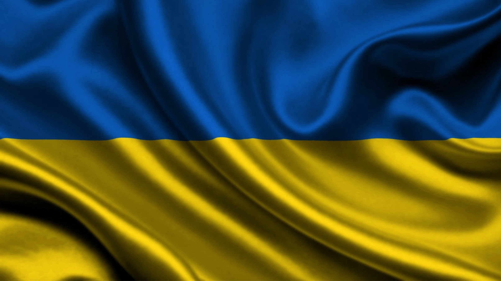

Welcome to Ukraine

History of Ukraine Kyiv, one of the oldest cities in Eastern Europe, has a rich history that dates back over 1,400 years. Founded around the 5th century, it became the capital of Kyivan Rus in the 9th century, serving as a major cultural and political center of the Slavic world. Under the leadership of Prince Volodymyr, Kyiv adopted Christianity in 988, which profoundly influenced Eastern European culture and religion. Despite facing invasions, including the Mongol destruction in 1240, Kyiv rose again, later becoming part of the Grand Duchy of Lithuania, the Polish-Lithuanian Commonwealth, and eventually the Russian Empire. In the 20th century, Kyiv played a key role in Ukraine's independence movement, which culminated in the dissolution of the Soviet Union in 1991, making Kyiv the capital of a free Ukraine. Today, it stands as a symbol of resilience and cultural heritage.
Ukraine Culture Ukrainian culture is a vibrant blend of ancient traditions, folklore, and modern influences shaped by its rich history. Known for its colorful festivals, traditional music, dance, and intricate embroidery, Ukraine celebrates its heritage through customs passed down for generations. Folk music and the "Hopak" dance reflect the spirited character of the people, while pysanky (decorated Easter eggs) showcase intricate artistry and symbolism. Ukraines literature, art, and theater are deeply influenced by themes of resilience and identity, with artists like Taras Shevchenko embodying the nation's love for freedom. Today, Ukrainian culture continues to evolve, blending old and new in a spirit of unity and pride.
War in Ukraine The war in Ukraine, which began in 2014 with Russia's annexation of Crimea and escalated in February 2022 with a full-scale invasion, has caused immense human suffering and geopolitical upheaval. The conflict has led to widespread displacement, destruction of infrastructure, and loss of life, while Ukraine's resilience and international support have strengthened its resolve. The war has sparked global debates about sovereignty, territorial integrity, and the future of international relations. Despite the ongoing violence, Ukraine continues to fight for its independence, with the world watching closely as the situation unfolds.
(Click on the image to view)
Learn more about Ukraine here
